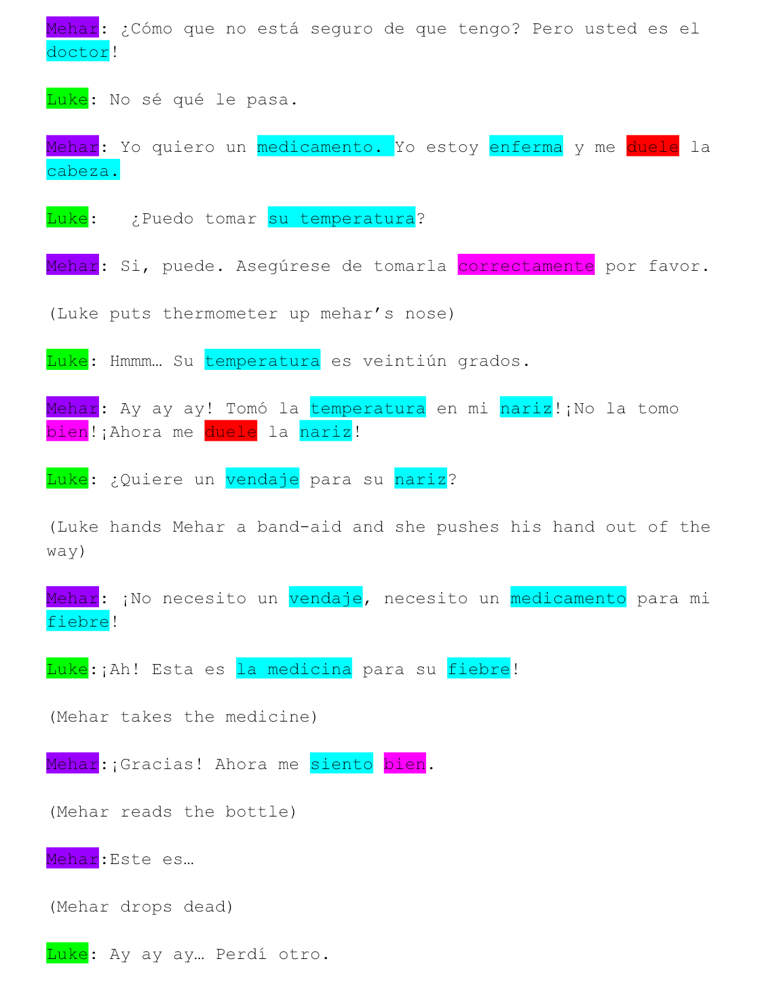

This artifact greatly reflects my SMART goal. In the process of this essay, I focused on organizing my time and thoughts. I used a detailed, organized thinking map that was made up of the annotations that I took from the Scarlett Letter. This represents my strength because in order to annotate, I have to listen to the symbolic meanings that the teacher says is hidden in the text. This process produces quality projects.
This artifact reflects my strength. In the process of this project, I had to listen to my partner. This shows how I have the ability to listen in groups and produce quality work.
These items reflect my ability to listen to the teacher and take quality notes, resulting in me u nderstanding information.
This artifact represents my growing ability of creating thinking maps. I used to not be able to produce quality thinking maps, but now I am way better at them.